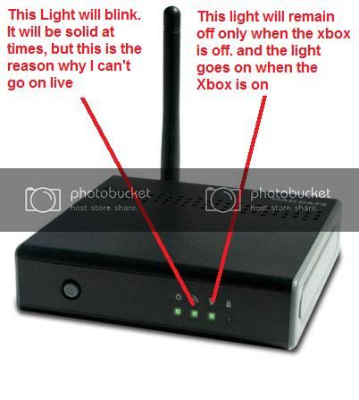

This has been a problem for me for almost 3 weeks and I can’t find a solution. I use a MadCatz wireless adapter. It looks something like this:
I have tried tuning it off and turning it back on but it still can’t connect to live.
Here’s a diagram describing what the lights on the adapter looks like:

The second light is the connection between a computer to the adapter and I do not know what to do.
Why don’t you use the official microsoft adapter? Sure it is £60 but it hasn’t failed me once and I have had it for 4 years.
if your Xbox is close enough to your PC then just connect an ethernet cable (if you have an available port) and bridge a connection. Cheapest Easiest way to get live.
I don’t want to waste more money ($90), but if it will work 99.99% AND it’s easy to set up, i guess it’s worth it. But i already got the MadCatz adapter, what should i do with that? I can’t just keep it as a worthless, and quite expensive, piece of shit.
The nearest PC from my Xbox is across a hallway, I do not have one in my room.
It is official and has worked with me for years, so I recommend getting it, as far your old adapter, maybe sell it on ebay?
Can’t connect to LIVE? Good.
How is that good?
My 360 is connected straight to my modem, but I had this issue with the original Xbox and my old wireless adapter.
Have you by chance had any sort of change in security or password for your internet?
My adapter wasn’t able to connect to my network once we got it encrypted, and I have to connect the adapter to my computer and then use its PC software so that it could read the protected network.
I doubt that’s the problem, but it sounds similar enough to mine that I thought I’d let ya know, just in case.
I did, actually. my original network settings were unsecure. so I kept it safe and made the network secure. At the same time, my adapter started to fail
Maybe try setting your settings back to normal and see if it works?
You should try selling your xbox. That might help.
Im not a networking type of guy, I don’t want to fuck up my internet that I cant go online for a certain period of time.
sigh i’m assuming you prefer the PC (or PS3) over the Xbox. Personally, I’m gaming neutral, I love every console/platform. I don’t care about people that are saying “HURR DURR ECKS BAWKS TREE SEXTY IS BETTER THAN PS3” or “SOCK IT XBAWKS FANBOYZ PEE ES TREE IS SO FUCKIN BETR IT HAS BLURAY…BLURAY!!!”
I really don’t care what console or platform is better, they are all awesome in their own way.
Now in the relevance of my predicament I will be getting the Microsoft adapter for the Xbox because I fear that a change in my network settings will lose my internet, and I just don’t like networking. 
Try unplugging and otherwise disconnecting all network devices, powering them off.
Connect your modem only,power it on, and hit a reset button on it if it has one. My cablemodem has a built-in battery backup, and will hold settings when simply unplugged.
After a few minutes, connect your next network device, like the ‘failed’ wireless adapter, or if you use something like a router or hub between the modem/wireless adapter, then connect and power that up first.
Repeat until all devices have been connected and restarted, and see if it works.
I could not get a hardware firewall to work on my new network, it really just needed me to reset the modem for some reason. Did that, connected the network setup one piece at a time, and it all worked…
Like I said, I don’t know shit about networking. It’s like every wrong move I make will lose my internet FOR ALL ETERNITY!!! Now the Microsoft wireless Adapter is easy to set up, because it looks like it only has 1 USB plug and no Ethernet cable (Which is good, maybe, I don’t know networking!!! :’() so it SHOULD be easy to set up.
So he can’t play games at all? I assume you are a PC gamer, I myself like consoles as they can run all games on them (they are optimised) I love controllers and I am indifferent about keyboards + mice. I think they are both great, but fps games are better on consoles and strategy are better on pc.
But lets not start a console vs pc debate here, Tubes is asking us to help him, not to give him a sermon.
Why isn’t it easier to just remove your WPA/WEP key? I highly doubt it will kill your internet connection but if it does I can walk you through fixing it. I keep my network unsecured even though I’m the only one who does that on my street, I know the passwords for all my neighbors so they’re the ones getting their internet stolen. 
Originally, the network i am currently using wasn’t secure. So i went on the router’s IP site and i had to make it secure. I changed the encryption type from nothing to WPA, added a passcode, and once i hit save and apply, The Internet shut down on me. :fffuuu: I had fucked up the internet twice trying to make the house all connected. But then something struck to me. I went to the Network and sharing center, went to manage network connections, went to the security tab, matched what I did on the website onto the security settings, clicked OK and…
BOOM![/SIZE]
I has secure Interwebz :retard:
and that is all I know about networking, but at the same time somehow, the Xbox adapter failed. I have 2 PCs and the adapter is hooked up to one (not the one in which I set up security) So i assume that the problem is that Other PC. All PC are hooked up with the same router. so it could possibly be the router.
Why are you paying for LIVE when you can have Steam for free?
That’s not how networking works, I think the xbox adapter connects directly to the router, via wireless, it doesn’t matter that your PC is connected to the internet. You need to input the WPA key into the xbox somehow.